4. International Trade
Motivation
Fast trade increase
Also in relation to GOP... tilt finantial crisis 2008
Source: OECD Note:Trade is the sum of exports and imports of goods and services measured as a share of GDP.
Evolution

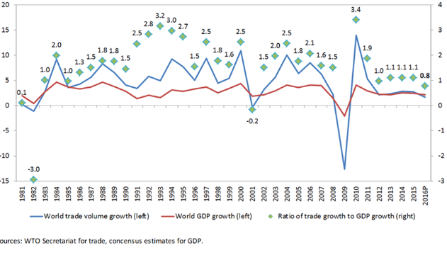
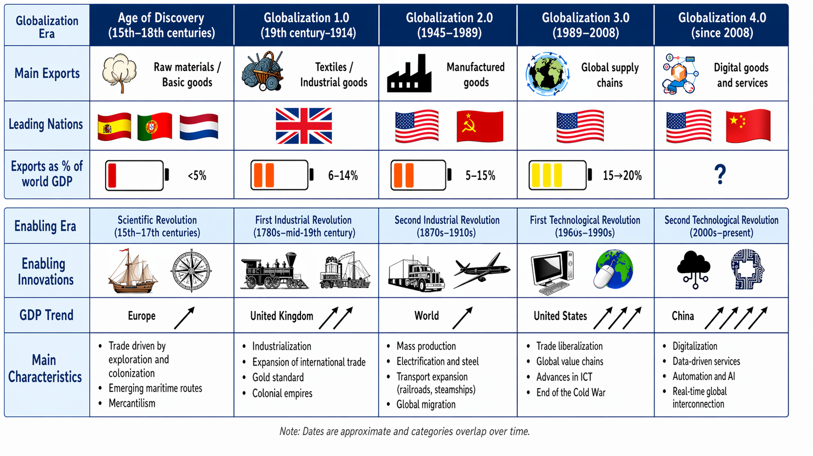
Source: Modified and inspired WTO
FMI - Changing Global Linkages: A New Cold War?
Geoeconomic Fragmentation and the Future of Multilateralism
Theory
Trade explained by different valuation of G&S derived of: taste, technology or production factors, firm characteristics...
Static benefits of trade
-
Specialization (different relative prices)
-
Change in production and consumption structure
Dynamic benefits of trade– Higher growth rate and welfare
-
Scale economies
-
Increase in competition -> efficiency, lower prices, variety, quality
-
Access to new technology
Consequences of trade
-
Increase in the production of G&S with greater comparative advantage and in the use of the productions factors in which the country is more intensive.
-
Change in consumption / increase in welfare.
Exporter prize (% increase over the non exporting firms)
Source: La empresa exportadora española: características, dinámica y estrategia competitiva
Theories
-
[Absolute advantage (Adam Smith) (1776). An Inquiry into the Nature and Causes of the Wealth of Nations] (https://archive.org/details/aninquiryintona00nichgoog/page/n22/mode/2up)
-
Comparative advantage (David Ricardo) David Ricardo's The Principles of Trade and Taxation (https://archive.org/details/aninquiryintona00nichgoog/page/n22/mode/2up)
-
Understand David Ricardo's principle of comparative advantage Britannica (https://www.britannica.com/video/186396/principle-advantage-David-Ricardo)
-
Comparative advantage Marginal Revolution University https://www.youtube.com/watch?v=4rUfoU04QJM / Comparative advantage2 MRU https://mru.org/courses/international-trade/comparative-advantage
-
Investopedia Video: Explaining Comparative Advantage Investopedia Video: Explaining Comparative Advantage https://www.youtube.com/watch?v=jNESLIbM8Ns
-
Comparative Advantage Kahn Ac. https://www.khanacademy.org/economics-finance-domain/ap-macroeconomics/basic-economics-concepts-macro/scarcity-and-growth/v/comparative-advantage-specialization-and-gains-from-trade / Ventaja comparativa Kahn Ac. https://es.khanacademy.org/economics-finance-domain/microeconomics/basic-economic-concepts-gen-micro/comparative-advantage-and-the-gains-from-trade/v/comparative-advantage-specialization-and-gains-from-trade
-
-
Relative factor endowments (Heckscher y Ohlin) Interregional and international trade, 1933 Vertical differentiation
Revealed Comparative Advantage Index
-
New theory of international trade (Krugman, Melitz) Horizontal differentiation Imperfect competition Economies of scale Monopolistic competition Product differentiation Tastes
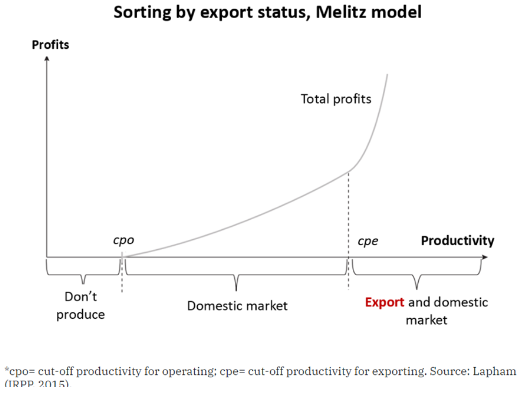 |
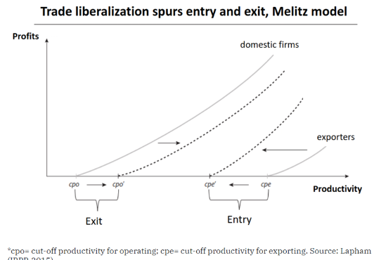 |
Competitive advantage is a broader business concept that describes the attributes, resources, or strategies that enable a firm to outperform its competitors in the market. While comparative advantage focuses on the relative efficiency between countries (or sectors or firms) in producing goods, competitive advantage encompasses factors like innovation, quality, branding, and cost leadership that help a firm secure a superior position within its industry.
Indicators
| Indicator | Formula |
|---|---|
| Coverage rate (CR) | \(CR = \frac{X}{M} \times 100\) |
| Coefficient of Trade Openess | \(CTO = \frac{X + M}{GDP} \times 100\) |
| Trade Account Balance (TAB) | \(TAB = \frac{X_g - M_g}{GDP} \times 100\) |
| Current Account Balance (CAB) | \(CAB = \frac{X_{g\&s} - M_{g\&s}}{GDP} \times 100\) |
| Comparative advantage index | \(IVCR = \frac{X_i / X}{X_{iw} / X_w}\) |
| Relative trade balance (RTB) | \(RTB_i = \frac{X_i - M_i}{X_i + M_i} \times 100\) |
| Index of the contribution to the balance (ICB) | \(ICB_i = \left[\frac{X_i - M_i}{X_i + M_i} - \frac{\sum X_i - \sum M_i}{\sum X_i + \sum M_i}\right] \cdot \frac{X_i + M_i}{(\sum X_i + \sum M_i)/2} \times 100\) |
| Grubel y Lloyd (GL) Index of intraindustry trade | \( GL_i = \frac{X_i + M_i - \lvert X_i - M_i \rvert}{X_i + M_i} = 1 - \frac{\lvert X_i - M_i \rvert}{X_i + M_i}, \quad 0 \leq GL_i \leq 1 \) |
Economic integration
GATT general agreement on tariffs and trade (1947) OMC (164 countries)
A most-favored-nation (MFN) clause requires a country to provide any concessions, privileges, or immunities granted to one nation in a trade agreement to all other World Trade Organization member countries. Equal treatment
Exceptions - Integration agreements - Developing countries (tariff reductions to all developing countries)
Trade creation and trade diversion.
Economic integration:
- Preferential agreements - non-reciprocal barrier reductions
- FTA – Reciprocal tariff reductions Nafta - USMCA
- Customs Union (CU) – common tariffs system
- Common Market (CM) = CU + free movement of capital and people
- Economic Union (EU) = CM + common economic policies
- Total integration, monetary union = EU+ Monetary Union (common currency & fiscal union)
-
Trade Creation: Trade creation happens when the customs union causes a member country to replace a relatively high-cost domestic producer with a lower-cost producer from within the union.
-
Trade Diversion: Trade diversion occurs when the customs union causes the home country to switch from buying a cheaper good from a non-member to a more expensive good from a member, simply because the latter now faces no tariff while the former still does.

Source: Own ellaboration using DESTA.
Trade aggreements
- Southern African Development Community (SADC)
- Common Market for Eastern and Southern Africa (COMESA)
- Economic Community of West African States (ECOWAS)
- Central African Economic and Monetary Community (CEMAC)
- West African Economic and Monetary Union (WAEMU)
- European Union (EU)
- North American Free Trade Agreement (NAFTA)
- Association of Southeast Asian Nations (ASEAN)
- Comunidad andina (CAN)

Customs unions
- Andean Community (CAN)
- Caribbean Community (CARICOM)
- Central American Common Market (CACM)
- East African Community (EAC)
- Economic and Monetary Community of Central Africa (CEMAC)
- Eurasian Customs Union (EACU)
- European Union Customs Union (EUCU; EU–Monaco; EU-Andorra; EU-San Marino; EU-Turkey)
- Common Market for Eastern and Southern Africa (COMESA)
- Gulf Cooperation Council (GCC)
- Israel–Palestinian Authority
- Southern Common Market (MERCOSUR)
- Southern African Customs Union (SACU)
- Switzerland–Liechtenstein (CH-FL)
- West African Economic and Monetary Union (WAEMU)
Trade barriers Beneficiaries- small groups Reassons:
- Nascent industry ( infant industries)
- Strategic sectors
Arancel óptimo: maximiza el bienestar del país.
En modelos básicos, el arancel óptimo, t, se expresa como: t=1/ε donde ε es la elasticidad de oferta de exportación extranjera.
Interpretación: - cuanto menos elástica sea la oferta extranjera, mayor puede ser el arancel óptimo; - cuanto más elástica, menor debe ser. Intuición: El arancel será “óptimo” mientras la ganancia por mejora de los términos de intercambio (relación entre precio de las exportaciones de un país y el precio de sus importaciones) sea mayor que las pérdidas internas de eficiencia.
Decreasing tariff and increasing NTB
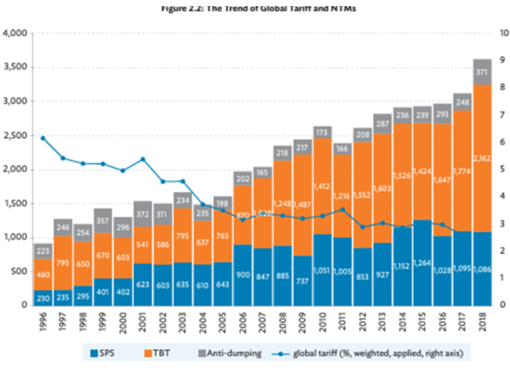
Source:GLOBAL VALUE CHAIN DEVELOPMENT REPORT 2023
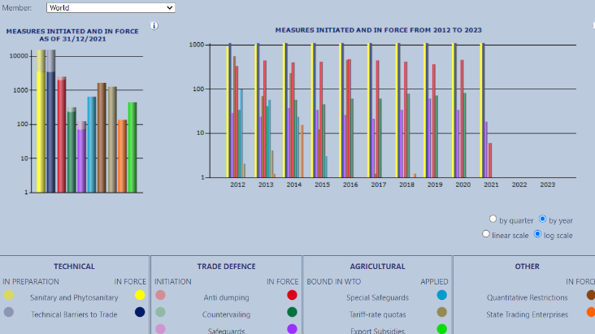
Great varieties of Non-Tariff Measures NTM https://i-tip.wto.org/goods/Forms/GraphView.aspx Source WTO
Geographic distribution:
- Trade concentration in developed countries (2/3 of trade inside the region)
- Increasing presence of developing (mainly Asia)
- Increase in the trade between the south
- Specialization
- Manufacturing but increasing role of services especially in developed countries. High intra industry trade. Primary good problems (Price variability-uncertainty, deterioration of terms of trade, technological improvement
- Developing Agriculture and lower level of intra industry trade
- Agricultural and extractive exports lower growth than manufacturing exports. Services higher growth (e.g. digital provided services) (growth rates depends on income elasticity)
- Services content in manufacturing exports is increasing
Problems of specializing in raw or agricultural materials:
- Variability of international prices (consequences on macroeconomic stability)
- Deterioration of the real terms of trade (export prices vs. import prices)
- Difficulties in the accumulation of technological capabilities.
Potential negative effects of trade
- Distributional (winners/losers)
-Job displacement and wage pressure
- High-skill/management vs routine labor
- Deindustrialization
- Offshoring
- Superstar effects
- Concentration
- Monopsony power; weaker bargaining power for workers
- Race-to-the-bottom concerns (standards and taxation)
- Labor/environmental standards (Pollution havens)
- Profit shifting and tax-base erosion
- Environmental harms
- Higher emissions from transport
- Biodiversity loss
- Financial fragility and external shocks
- Openness can transmit crises (credit crunch → trade collapse)
- Currency mismatches, sudden stops, and volatility for trade-dependent economies
- Supply-chain vulnerability / Food and energy dependence
- Political backlash
- Populism and polarization
- Reduced trust in institutions; backlash against immigration/trade agreements
- Policy autonomy
- Dependence
- Commodity price crisis
Global Value Chains
Trade in value-added and global value chains: country statistical profiles
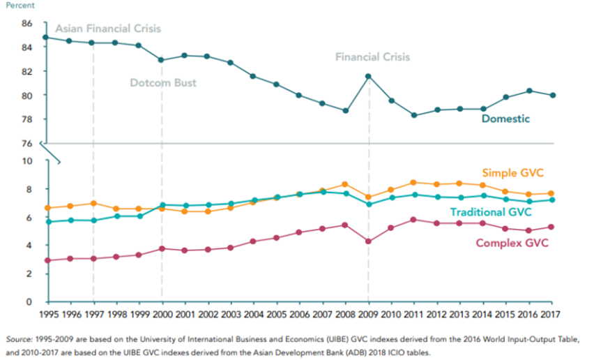
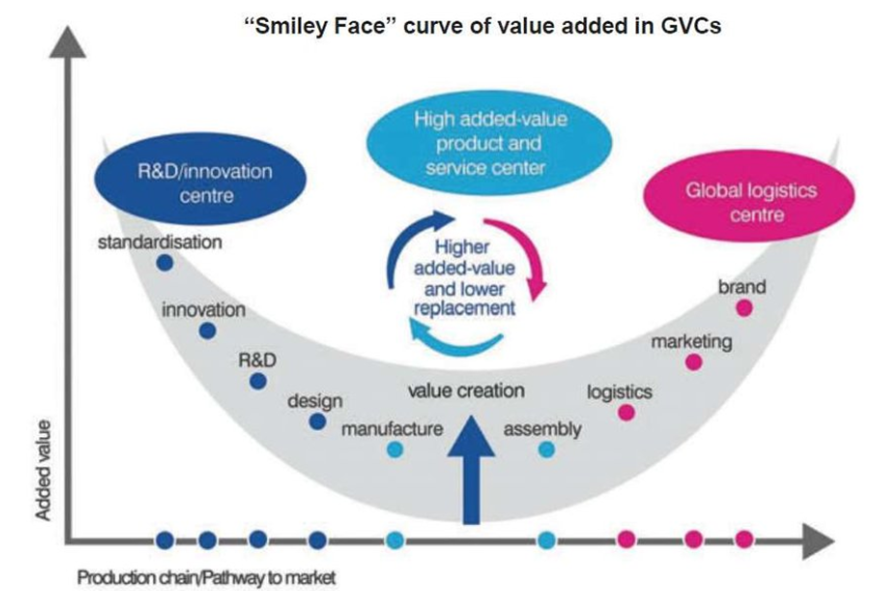
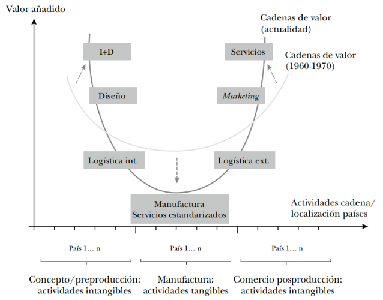
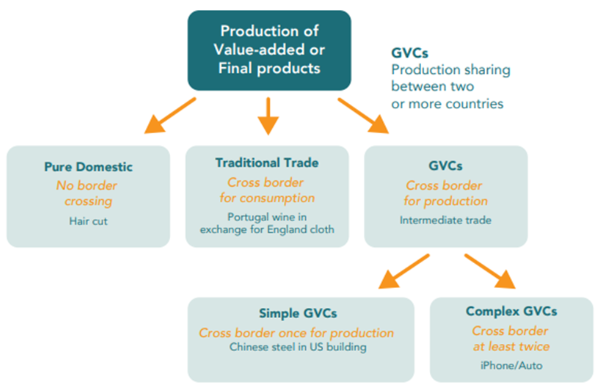
Imput/Output
Data:
- GATT - WTO
- UNCTAD
- TiVA (OCDE-) Inter-Country Input-Output (ICIO)
Annex: Companies vs Countries
- Market capitalization of listed domestic companies (% of GDP)
- The World’s Tech Giants, Compared to the Size of Economies
- Who is More Powerful – Countries or Companies?
- Is apple bigger than Belgium?
- Companies with revenues greater than GDP of countries
Glossary
Exercise
Comparative advantage
Exercises
1- Exercise FDI
Using data from OECD. - Compare FDI flows and stocks for one country. - Explain why the are not exactly related (stock (t+1) = stock (t) + flow - Which countries has more stock.
2- Exercise Trade and FDI Using this data from UNCTAD select one country and - Calculate trade openess - Compare remitances with FDI
3- Exercise Trade and competitiveness
Use WITS data to obtain merchandise trade (exports, imports), tariff and non-tariff (NTM) data, perform tariff cut simulation and analyze trade competitiveness of countries.
4- Read and summarize
Summarize the topics and trends of the 4 latest Global Trade Update - UNCTAD
References
Globalisation and Economic Growth: A Historical Perspective. Nicholas Crafts
Learn more
Documents
- Charting Globalization’s Turn to Slowbalization After Global Financial Crisis & [The peak of globalisation myth]https://rbaldwin.substack.com/p/the-peak-) & Which nation(s) drove globalisation’s peak?
- What are the six facts you need to know about the future of trade?
- History of the multilateral trading system
- A tale of two globalizations: gains from trade and openness 1800-2010
- Has Globalisation Really Peaked for Europe? ECIPE
- Global Trade Update - UNCTAD
- Is Globalization Dead?
- A brief history of globalization | World Economic Forum
Statistics
- Examen estadístico del comercio mundial WTO
- World Integrated Trade Solutions Cadenas globales de valor OECD
- World Integrated Trade Solution (WITS) | Data on Export, Import, Tariff, NTM
- IMF Data Mapper
- The Atlas of Economic Complexity Visualize global trade data and economic growth opportunities for every country
- The Observatory of Economic Complexity | OEC Access monthly 2021 data for the world's largest economies. Explore the trade patterns of provinces cities and states, such as Bavaria in Germany, Beijing in China, or California in the United States.
- World Trade Monitor CPB
Is Globalization Dead? | Davos | #WEF22 - YouTube
Data and Tools for Trade and Global Value Chains Analyses
https://www.visualcapitalist.com/mapped-foreign-direct-investment-by-country/ https://www.visualcapitalist.com/the-importance-of-fdi-and-why-it-must-be-revived/
Policy and Theory of International Trade
Challenges and Opportunities in International Business
Sociology: Comprehensive Edition https://geerthofstede.com/
ETHICS and Internationa Bussines:
- Global Business Ethics
- Corruption in International Business
- corporations-and-their-social-responsibility
- CSR - RSC
Reading
Which nation(s) drove globalisation’s peak?
Trump’s Conduct of Trade War: What Lessons for His Conduct of Real War?
Global Database of Events, Language, and Tone
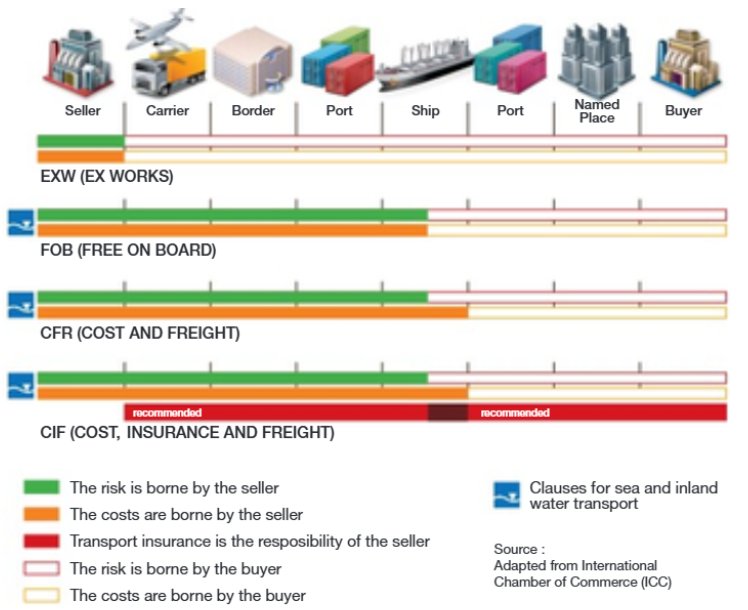
Travel Times from London in 1914 & 2016 created by John George Bartholomew
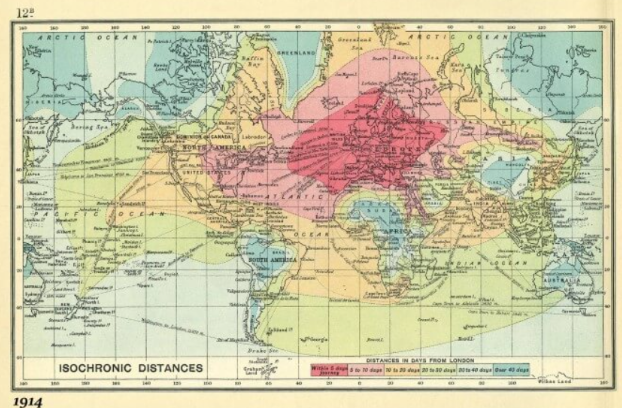 |
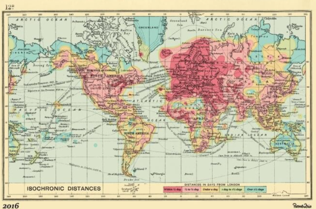 |
isochrone map: Travel Times From London In 1881: The First Known Isochronic Map By Francis Galton
The Geography of Transport Systems
Review of maritime transport:
Exchange Rate Risk: Strategies to Manage Economic Exposure
Communities for Expats - Expatica - InterNations